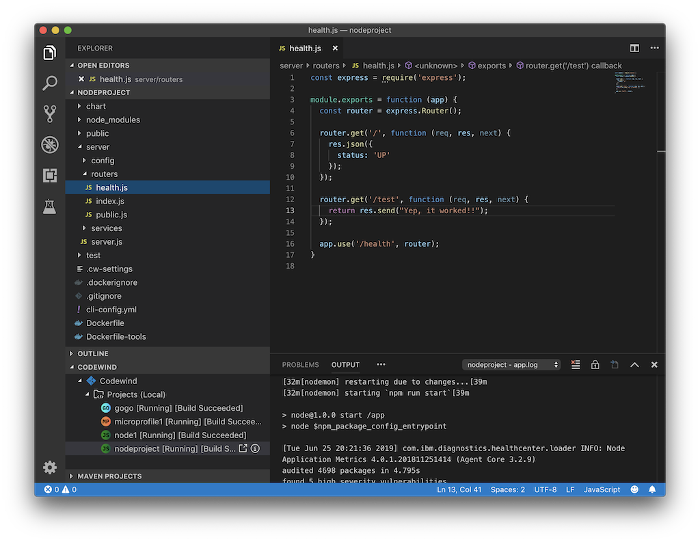
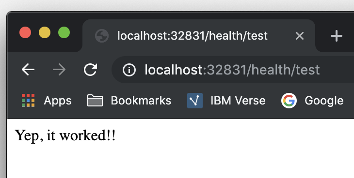
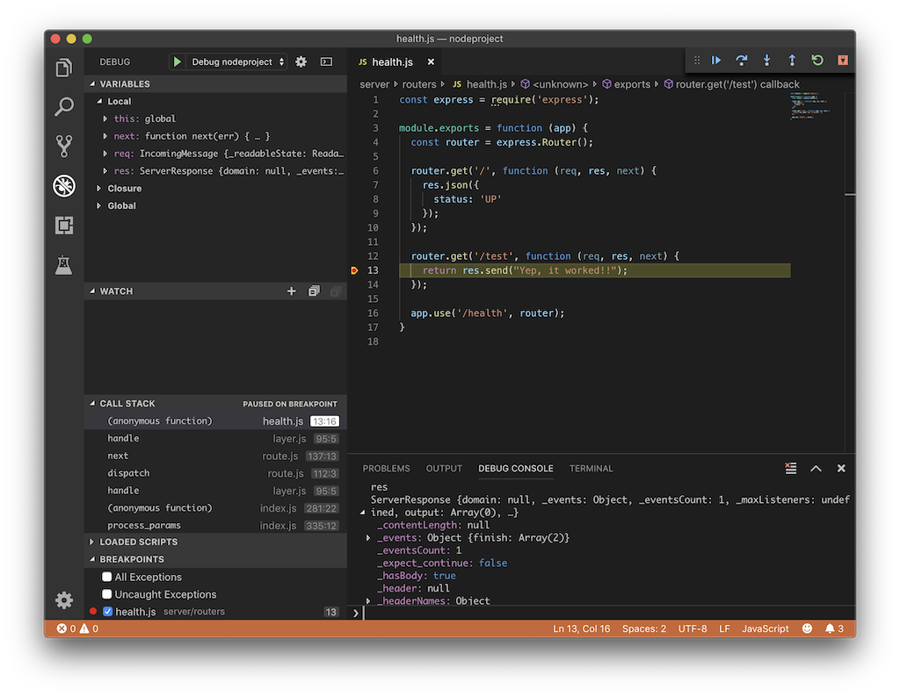

Tutorial: Codewind for VS Code
Follow this example workflow to use the tools for VS Code to develop a Node.js project. All the features demonstrated in this tutorial are also available for Microprofile and Spring projects.
For more detail on any of the commands, see the commands overview.
- First, ensure that Codewind is installed and running. For more information, see the Getting started: Codewind for VS Code page. Proceed after your projects appear with the Codewind view.
- Create a Node.js project in Codewind. Skip this step if a Node.js project already exists. This tutorial assumes that your project is called nodeproject.
- Right-click the Projects (Local) item in the Codewind tree and select Create new project.
- In the Command Palette, select Node.js Template and press Enter.
- In the Command Palette, type a name for the project and press Enter.
- Make the new project your workspace folder. This project is the only project that you need to work on for this tutorial.
- Right-click the project and select Open Folder as Workspace. VS Code restarts with the selected project folder as the workspace folder.
- Open the Project Overview page to view project information.
- Right-click the project and select Show Project Overview.
- To view the project standard output and error as you develop it, open the application logs.
- Right-click the project and select Show Application Log. The log appears in the Output view.
- Node.js projects do not have build logs, but if you work on some other types of projects, you can also view the build logs.
- Open a file to edit. For example, modify the
healthendpoint of the default Node.js project.- Open a Javascript file, such as
nodeproject/server/routers/health.js. - Make a code change.
- For example, you can add the following endpoint to
health.jsafter the existingGET /middleware function:router.get('/test', function (req, res, next) { return res.send("Yep, it worked!!"); }); - Codewind detects the file changes and restarts your application.
- In the Codewind tree, the application stops and starts again as the application server restarts.
- You can also see nodemon restart the project in the application logs.
- At this point, your VS Code should look similar to the following example:

- Open a Javascript file, such as
- To make sure your code change was picked up, test your new endpoint.
- Right-click the project and select Open App. The project root endpoint opens in the browser, and the IBM Cloud Starter page appears.
- Navigate to the new endpoint. If you copied the previous snippet, add
/health/test/to the URL. - See the new response:

- You can debug your application within the container. To debug a containerized project, restart it in Debug mode.
- Right-click the project and select Restart in Debug Mode.
- The project restarts into the Debugging state.
- A debug launch configuration is created in
nodeproject/.vscode/launch.json. - The debugger attaches, and VS Code opens the Debug view.
- You can detach and reattach the debugger at any time, as long as the project is still in Debug mode.
- All of the VS Code debug functionality is now available.
- If your code matches the screenshot, set a breakpoint at line 13 in
health.js. - Refresh the new endpoint page that you opened in step 7 so that a new request is made, and the breakpoint gets hit.
- VS Code suspends your application at the breakpoint. Here you can step through the code, inspect variables, see the call stack, and evaluate expressions in the Debug Console. 
- If your code matches the screenshot, set a breakpoint at line 13 in